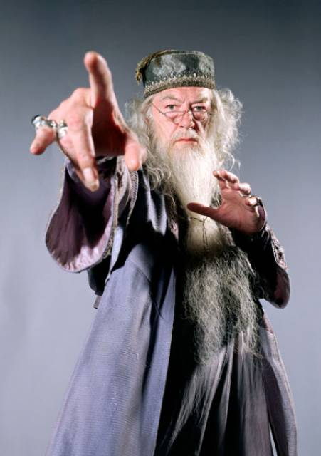

Opgelet: De CSS code staat nu nog in dit HTML document zelf. Later zal ik dus CSS in een apart stylesheet (.css-bestand) plaatsten. Voor deze oefening mag dit dus. :-)
Persoonlijke informatie
Volledige naam: Jari OpsomerAdres: Goudenleeuwplein 1, 9000 GentTelefoonnummer: 0498 12 34 56E-mailadres: jari.opsomer@email.com

Hobby’s & activiteiten
Snowboarden Snowworld info
Reizen Lonely Planet
Italiaanse keuken Italiaanse recepten
Informatica Leer programmeren
Muziek luisteren Spotify
© 2025 Jari Opsomer – Pagina gemaakt omwille van labo 3